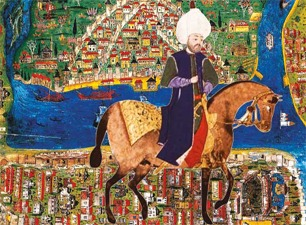

14. Yüzyıl
14. Yüzyıl
İbn Battûta
30 yıllık yolculuğunda 120 bin kilometre yol katetti; İslam medeniyeti havzasını ve Asya saraylarını kaleme aldı.

17. YüzyılEvliyâ Çelebi
Osmanlı coğrafyasını 50 yıl boyunca karış karış gezerek 10 ciltlik eşsiz bir dünya şaheseri armağan etti.
 16. Yüzyıl
16. Yüzyıl
Pîrî Reis
1513 tarihli dünya haritası ve Akdeniz kılavuzu Kitâb-ı Bahriye ile dünya denizcilik mirasının zirvesi.
 17. Yüzyıl
17. Yüzyıl
Kâtib Çelebi
Cihannümâ ile İslam coğrafyasıyla Batı atlaslarını meczederek modern Osmanlı coğrafya ilminin öncüsü oldu.
 10. Yüzyıl
10. Yüzyıl
İbn Fadlân
Bağdat’tan İtil kıyılarına uzanan yolculuğunda Vikingler ve Türk kavimleri hakkında ilk kayıtları tuttu.
 13. Yüzyıl
13. Yüzyıl
Marco Polo
İpek Yolu boyunca 24 yıl süren yolculuğunun ardından Batı dünyasına Çin sarayının ihtişamını anlattı.
El-Mes‘ûdî
“İslam’ın Herodot’u”. 4 ciltlik “Altın Bozkırlar ve Mücevher Madenleri” eseriyle kadim milletleri kaydetti.
Yeni Bir Seyyah Dosyası Önerin
Arşivimizde yer almasını istediğiniz seyyah ve seyahatname metinlerini bizimle paylaşın.